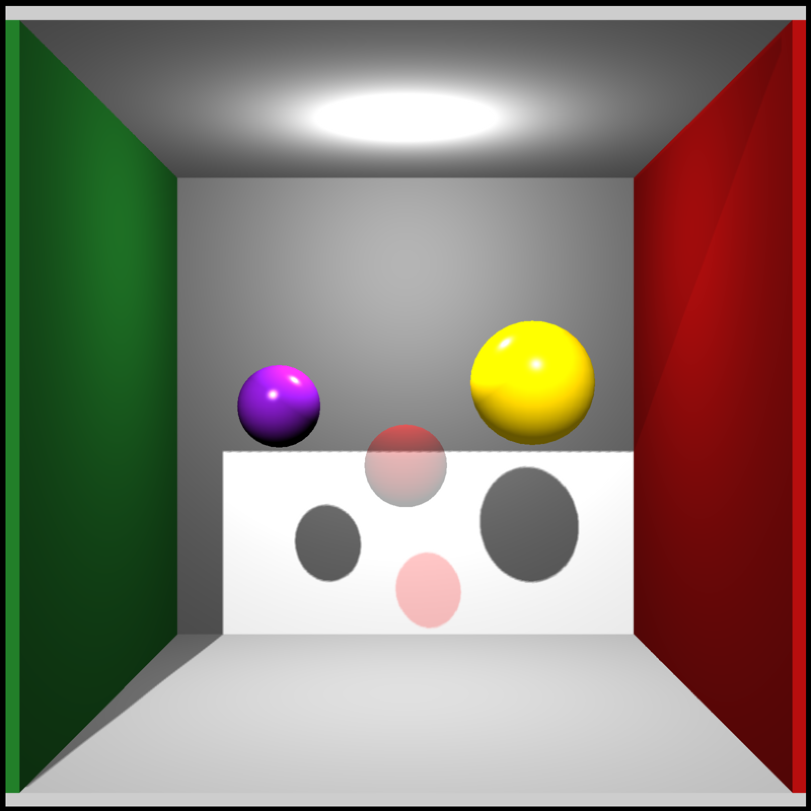

set_material.RdSet Material
Add shape to a mesh
set_material( mesh, material = NULL, id = NULL, diffuse = c(0.5, 0.5, 0.5), ambient = c(0, 0, 0), specular = c(1, 1, 1), transmittance = c(1, 1, 1), emission = c(0, 0, 0), shininess = 10, ior = 1, dissolve = 1, illum = 1, texture_location = "", normal_texture_location = "", specular_texture_location = "", ambient_texture_location = "", emissive_texture_location = "", diffuse_intensity = 1, specular_intensity = 1, emission_intensity = 1, ambient_intensity = 1, culling = "back", type = "diffuse", translucent = TRUE, toon_levels = 5, toon_outline_width = 0.05, toon_outline_color = "black", reflection_intensity = 0, reflection_sharpness = 0 )
| mesh | The target mesh. |
|---|---|
| material | Default `NULL`. You can pass the output of the `material_list()` function to specify the material, or use the following individual settings. |
| id | Default `NULL`. Either a number specifying the material to change, or a character vector matching the material name. |
| diffuse | Default `c(0.5,0.5,0.5)`. The diffuse color. |
| ambient | Default `c(0,0,0)`. The ambient color. |
| specular | Default `c(1,1,1)`. The specular color. |
| transmittance | Default `c(1,1,1)`. The transmittance |
| emission | Default `c(0,0,0)`. The emissive color. |
| shininess | Default `10.0`. The shininess exponent. |
| ior | Default `1.0`. The index of refraction. If this is not equal to `1.0`, the material will be refractive. |
| dissolve | Default `1.0`. The transparency. |
| illum | Default `1.0`. The illumination. |
| texture_location | Default `""`. The diffuse texture location. |
| normal_texture_location | Default `""`. The normal texture location. |
| specular_texture_location | Default `""`. The specular texture location. |
| ambient_texture_location | Default `""`. The ambient texture location. |
| emissive_texture_location | Default `""`. The emissive texture location. |
| diffuse_intensity | Default `1`. The diffuse intensity. |
| specular_intensity | Default `1`. The specular intensity. |
| emission_intensity | Default `1`. The emission intensity. |
| ambient_intensity | Default `1`. The ambient intensity. |
| culling | Default `"back"`. The culling type. Options are `back`, `front`, and `none`. |
| type | Default `"diffuse"`. The shader type. Options include `diffuse`,`phong`,`vertex`, and `color`. |
| translucent | Default `TRUE`. Whether light should transmit through a semi-transparent material. |
| toon_levels | Default `5`. Number of color breaks in the toon shader. |
| toon_outline_width | Default `0.05`. Expansion term for model to specify toon outline width. Note: setting this property via this function currently does not generate outlines. Specify it during object creation. |
| toon_outline_color | Default `black`. Toon outline color. Note: setting this property via this function currently does not color outlines. Specify it during object creation. |
| reflection_intensity | Default `0.0`. Intensity of the reflection of the environment map, if present. This will be ignored if the material is refractive. |
| reflection_sharpness | Default `1.0`. Sharpness of the reflection, where lower values have blurrier reflections. Must be greater than zero and less than one. |
Shape with new material
# \dontshow{ options("cores"=1) # } #Set the material of an object # \donttest{ generate_cornell_mesh() %>% add_shape(set_material(sphere_mesh(position=c(400,555/2,555/2),radius=40), diffuse="purple", type="phong")) %>% add_shape(set_material(sphere_mesh(position=c(555/2,220,555/2),radius=40), dissolve=0.2,culling="none",diffuse="red")) %>% add_shape(set_material(sphere_mesh(position=c(155,300,555/2),radius=60), material = material_list(diffuse="gold", type="phong", ambient="gold", ambient_intensity=0.4))) %>% rasterize_scene(light_info=directional_light(direction=c(0.1,0.6,-1)))#># }